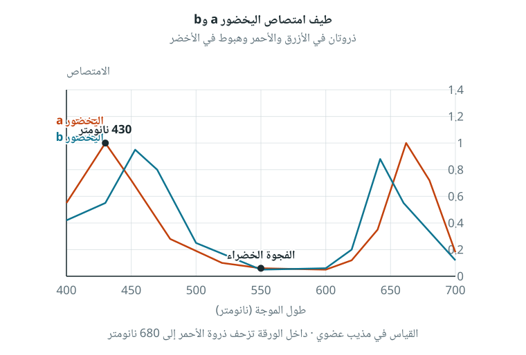

اليخضور وامتصاص الضوء
Chlorophyll
صبغة تمتص الأزرق والأحمر بقوة وتعكس الأخضر، تنقل الطاقة بالرنين إلى مركز تفاعل واحد يفقد إلكترونًا؛ ويحدّ كفاءتها النظرية عدد الفوتونات اللازمة لكل جزيء أكسجين.
اليخضور صبغة كلوروفيلية تمتص الضوء المرئي وتحوّله إلى طاقة كيميائية داخل أغشية الثايلاكويد. تمتص الأزرق والأحمر بقوة وتعكس الأخضر أو تنفذه، ولهذا يظهر النبات أخضر. توجد في مجمّعات هوائية تحتوي مئات الجزيئات التي تنقل الطاقة بالرنين إلى جزيء مركز التفاعل الوحيد الذي يفقد إلكترونًا.
سلسلة النقل الإلكتروني تنتج ATP وNADPH، ويُستخدمان في حلقة كالفن لتثبيت ثاني أكسيد الكربون. الضوء الممتص لا يتحول كله إلى سكر: جزء يُفقد حرارةً أو إشعاعًا في الفلورة، وجزء يستهلكه التنفس النباتي، لذلك تنخفض الكفاءة الفعلية للمحاصيل كثيرًا عن الحد النظري المحسوب لطول موجي واحد.
الآلية
كيف يحدث الأمر على مستوى الجسيمات أو المتغيّرات المباشرة
الخطوة الأولى امتصاص فوتون بطاقة hν يرفع إلكترون اليخضور من الحالة الأرضية إلى حالة مثارة في زمن فيمتوثانية. الطاقة تنتقل بين جزيئات المجمّع الهوائي بالرنين حتى تصل إلى P680 في مركز التفاعل، حيث يُفقد الإلكترون إلى مستقبل أوّلي ويُستبدل من الماء: 2H₂O → 4H⁺ + 4e⁻ + O₂. الإلكترون يسير عبر سلسلة نقل حتى NADP⁺، وفرق البروتونات عبر الغشاء يشغّل ATP سينثيز. مركز P700 يعيد شحن NADPH بفوتون ثانٍ. الطاقة تتحول في أربع خطوات: فوتون، ثم كمون اختزال، ثم فرق بروتونات، ثم رابطة كربون في السكر.
الأرقام والوحدات
العلاقات والوحدات والنطاقات العددية التي تسند الشرح
ذُرى الامتصاص لليخضور a في مذيب عضوي عند 430 و662 نانومتر، ولليخضور b عند 453 و642 نانومتر. يلزم 8 فوتونات لإنتاج جزيء أكسجين واحد: أربعة إلكترونات ولكل إلكترون فوتونان. طاقة ثمانية فوتونات عند 680 نانومتر تساوي 8 × 2.92×10⁻¹⁹ = 2.34×10⁻¹⁸ جول، مقابل نحو 7.8×10⁻¹⁹ جول مخزونة كسكر لكل جزيء أكسجين، أي كفاءة نظرية 33% عند ذلك الطول وحده. نطاق الضوء الفعّال من 400 إلى 700 نانومتر يحمل نحو 45% من طاقة الشمس الواصلة، وكفاءة المحاصيل الحقلية 1–2% من الإشعاع الكلي.
الفرق الدقيق
المفهوم الملتبس الذي يُخلَط به، وأين ينفصلان
الخلط الأول: القول بأن اللون الأخضر لأن اليخضور لا يمتصه صحيح جزئيًّا فقط؛ الامتصاص في الأخضر ضعيف لا صفري، والانعكاس الكلي يضم انعكاس الأوراق وتشتت الأنسجة. الثاني: اليخضور ليس صبغة واحدة؛ a وb يختلفان في مجموعة الفورميل وفي ذُرى الامتصاص، والكاروتينات تمتص في الأزرق وتحمي من الأكسدة الضوئية. الثالث: التمثيل الضوئي ليس تنفّسًا معاكسًا؛ المساران يستخدمان سلاسل نقل إلكتروني مختلفة الاتجاه والمكان. الرابع: امتصاص الفوتون ليس تحويلًا مباشرًا إلى سكر، بل إلى كمون اختزال أولًا.
حدود التعريف
أين ينكسر التعريف أو النموذج وما الذي لا يفسّره
الطيف المقيس في مذيب عضوي يختلف عن الطيف داخل الورقة: التكدّس البروتيني وتأثير الأغشية ووجود الكاروتينات تزحزح الذُرى ببضعة نانومترات، لذلك تُذكر ذروة 680 داخل التجويف مقابل 662 في المذيب. الكفاءة 33% حدّ نظري لطول موجي واحد ولا تشمل فقد التنفس الضوئي وتنافس الأكسجين على RuBisCO. تقدير 45% لنطاق الضوء الفعّال متوسط سنوي يعتمد على خط العرض والغيوم. وأرقام 1–2% تخص محاصيل مروية تحت شمس كاملة، وتتغير بالحرارة ومحتوى النيتروجين في الورقة.

| الكمية | القيمة | المصدر |
|---|---|---|
| ذروة امتصاص اليخضور a في الأزرق | 430 نانومتر | [1] |
| ذروة امتصاص اليخضور a في الأحمر | 662 نانومتر | [1] |
| عدد الفوتونات اللازمة لإنتاج جزيء أكسجين | 8 فوتون | [2] |
| نصيب نطاق الضوء الفعّال من طاقة الشمس الواصلة | 45 % | [1] |
المصادر
- 1 Biology 2e — 8.2 The Light-Dependent Reactions of Photosynthesis — OpenStax. openstax.org/books/biology-2e/pages/8-2-the-light-dependent-reactions-of-photosynthesis · اطُّلع عليه 2026-11-16
- 2 Biology 2e — 8.1 Overview of Photosynthesis — OpenStax. openstax.org/books/biology-2e/pages/8-1-overview-of-photosynthesis · اطُّلع عليه 2026-11-16
استشهد بهذا المصطلح
الصيغتان مبنيتان من بيانات الصفحة نفسها: العنوان والتاريخ ورابط النسخة المنشورة.
اليخضور وامتصاص الضوء — Chlorophyll. (2026). ديوان المعرفة — انفراد. https://infiradev.com/diwan/terms/chlorophyll.html
@misc{chlorophyll2026,
title = {اليخضور وامتصاص الضوء},
titleaddon = {Chlorophyll},
howpublished = {{ديوان المعرفة — انفراد} — مرجع علمي عربي},
year = {2026},
url = {https://infiradev.com/diwan/terms/chlorophyll.html},
urldate = {2026-11-16},
note = {مراجعة علمية: مراجعة آلية — ديوان المعرفة (روابط المصادر + عقد المحتوى + وجود الرسم) 2026-11-16}
}
راجعه: مراجعة آلية — ديوان المعرفة (روابط المصادر + عقد المحتوى + وجود الرسم) 2026-11-16 · 2026-11-16 · آخر تحديث 2026-11-16